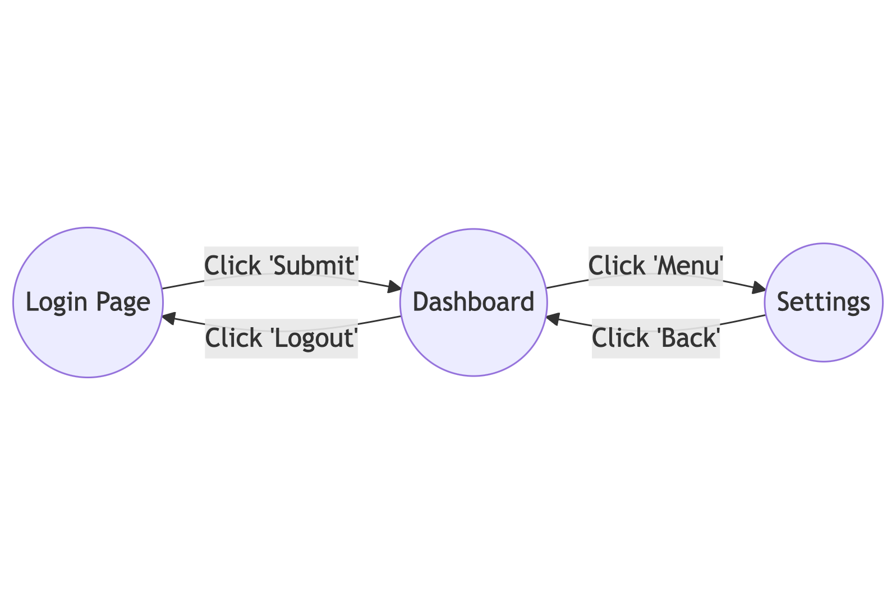
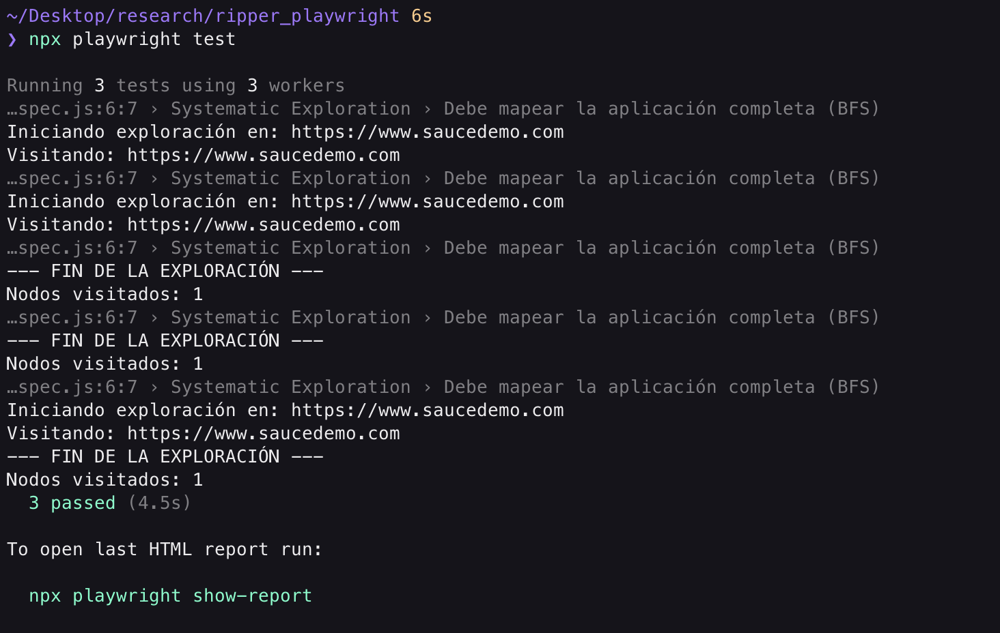
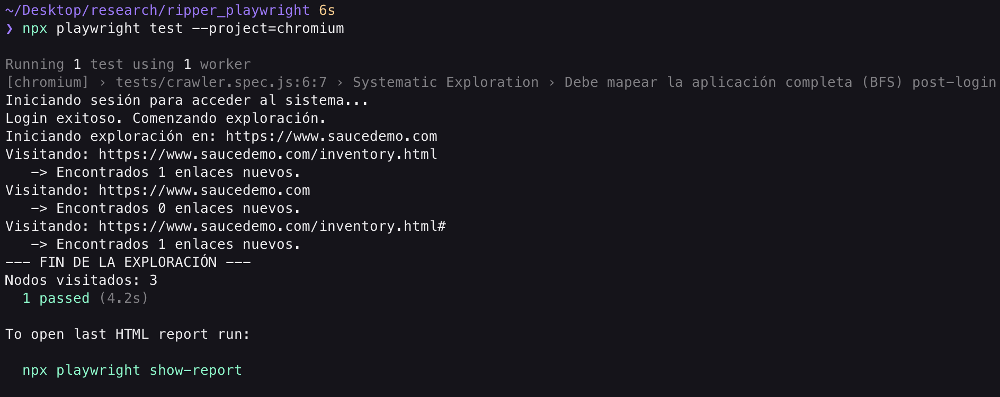
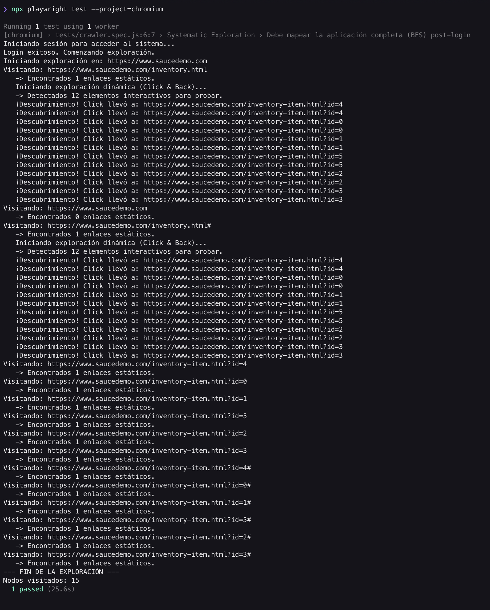
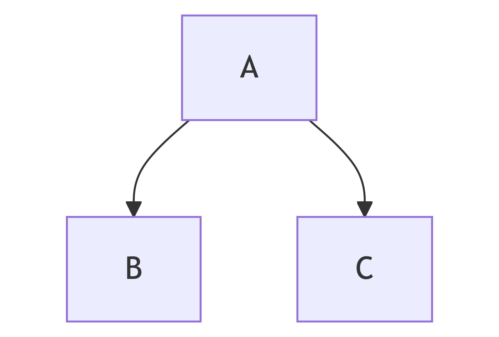
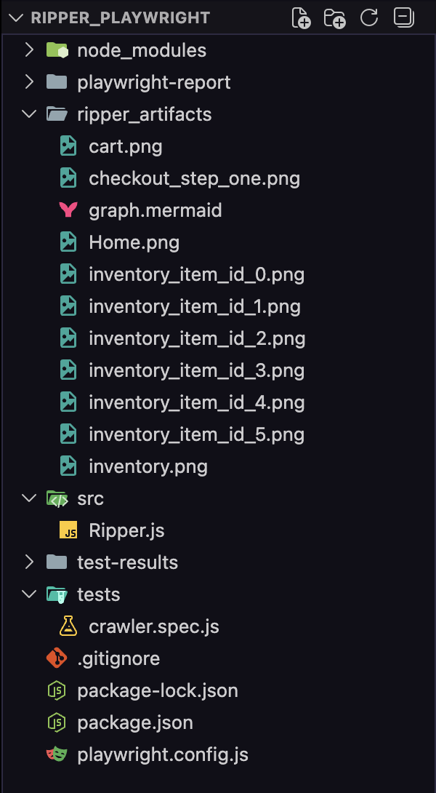

"El Monkey Testing golpea la puerta con un martillo para ver si se rompe. El GUI Ripping abre todas las puertas, dibuja un mapa de la casa y verifica si alguna habitación tiene goteras."
Para entender por qué necesitamos GUI Ripping, miremos nuestro viaje hasta ahora:
Login -> Checkout) y escribimos un guion preciso. Si el diseño cambia, el script falla. Fase | Tipo de exploración | Naturaleza |
E2E | Scripted | Determinística |
Monkey | Random | Estocástica |
Ripper | Systematic | Exhaustiva / Model-based |
El término "Ripping" (del inglés to rip, arrancar o extraer) se refiere a la técnica de Ingeniería Inversa de la interfaz gráfica.
Un Ripper es un robot de software que navega automáticamente por la aplicación gráfica (GUI), "arrancando" información sobre sus ventanas, botones y campos de texto para construir un Modelo (Grafo) del comportamiento del sistema.
El ciclo de vida de un Ripper:
Para construir un Ripper, debemos pensar en la aplicación como un Grafo Dirigido (G=(V,E)).
Un Estado no es solo la URL. Dos usuarios pueden estar en /dashboard, pero uno ve un mensaje de error y el otro una tabla de datos. Son estados visuales distintos.
Una Transición es el evento que nos mueve de un estado A a un estado B.

Si soltamos al robot en una aplicación grande, ¿cómo aseguramos que visite todo sin quedarse atrapado en un bucle infinito (ej: Calendario Siguiente -> Siguiente -> Siguiente...)?
Existen dos estrategias clásicas:
El robot elige un camino y lo sigue hasta el final (o hasta un límite de profundidad) antes de retroceder.
Login -> Producto 1 -> Detalle -> Comprar -> Checkout -> Pagar... (y luego vuelve para ver el Producto 2).El robot explora todos los vecinos inmediatos antes de profundizar.
Dashboard, hace click en TODOS los botones del menú uno por uno, registrando a dónde llevan, antes de entrar a navegar dentro de esas sub-páginas.En un test E2E manual, tú escribes expect(título).toBe('Éxito').
En un Ripper, el robot no sabe qué es "correcto" y qué no. Necesitamos Oráculos Genéricos:
Para este taller usaremos Playwright por razones técnicas específicas que superan a Selenium/Cypress para esta tarea:
El objetivo de este taller no es reemplazar tus pruebas funcionales. Un Ripper no sabrá si el cálculo de impuestos es correcto.
El objetivo es Cobertura Topológica: Asegurar que no existan "enlaces rotos" ni "pantallas de error" ocultas en tu aplicación antes de liberar una versión.
A diferencia de los talleres anteriores donde escribíamos scripts sueltos, aquí vamos a construir una herramienta. Un Ripper es una pieza de software compleja que necesita gestionar memoria (qué ya visité), cola de tareas (qué me falta visitar) y reporte de errores. Por ello, la arquitectura de nuestro código será fundamental.
En este módulo, no solo instalaremos Playwright. Vamos a diseñar la Clase Maestra que gobernará la exploración. Pasaremos de escribir "tests lineales" a escribir un "algoritmo de grafos".
Comenzaremos con un proyecto limpio. Playwright tiene un inicializador excelente que configura TypeScript/JavaScript y descarga los navegadores necesarios.
npm init playwright@latest
Getting started with writing end-to-end tests with Playwright:
Initializing project in '.'
✔ Do you want to use TypeScript or JavaScript? · JavaScript
✔ Where to put your end-to-end tests? · tests
✔ Add a GitHub Actions workflow? (Y/n) · false
✔ Install Playwright browsers (can be done manually via 'npx playwright install')? (Y/n) · true
Una vez termine, limpia el proyecto: borra el archivo tests/example.spec.js.
playwright.config.js)Un Ripper se comporta muy diferente a una prueba unitaria. Puede tardar minutos u horas explorando. Necesitamos ajustar el archivo de configuración para evitar que Playwright "mate" al proceso por tardar demasiado (Timeouts).
Abre playwright.config.js y ajusta lo siguiente:
import { defineConfig, devices } from '@playwright/test';
export default defineConfig({
testDir: './tests',
// 2. PARALELISMO:
// Importante: Un Ripper suele ser secuencial (Fully Parallel = false)
// porque comparte estado (la cola de URLs).
fullyParallel: false,
forbidOnly: !!process.env.CI,
retries: process.env.CI ? 2 : 0,
workers: process.env.CI ? 1 : undefined,
reporter: 'html',
use: {
// URL Base de Swag Labs
baseURL: 'https://www.saucedemo.com',
// 3. ARTEFACTOS DE DEPURACIÓN:
// Queremos ver el Trace solo si el Ripper falla o encuentra un error.
trace: 'retain-on-failure',
screenshot: 'only-on-failure',
video: 'retain-on-failure',
},
projects: [
{
name: 'chromium',
use: { ...devices['Desktop Chrome'] },
},
{
name: 'firefox',
use: { ...devices['Desktop Firefox'] },
},
{
name: 'webkit',
use: { ...devices['Desktop Safari'] },
},
],
});
RipperAquí es donde nos separamos de un tutorial básico. No vamos a escribir un script plano. Vamos a crear una Clase que encapsule la lógica del grafo.
Concepto: El Vector de Estado
El Ripper necesita memoria.
visited (Set): Un conjunto de URLs o Hashes que ya visitamos para no entrar en bucles infinitos.queue (Array): Una lista FIFO (First-In, First-Out) de estados pendientes por explorar.graph (Map): La estructura de datos donde guardaremos el mapa resultante (Nodo A -> Nodo B).Crea una carpeta src en la raíz y dentro un archivo Ripper.js.
/**
* El Cartógrafo Digital.
* Responsable de navegar, catalogar y reportar el estado de la aplicación.
*/
export class Ripper {
constructor(page, baseUrl) {
this.page = page; // La instancia del navegador de Playwright
this.baseUrl = baseUrl;
// MEMORIA DEL ROBOT
// Usamos un Set para búsquedas O(1) súper rápidas
this.visitedUrls = new Set();
// LA COLA DE TAREAS (Frontier)
// Aquí guardamos las URLs que descubrimos pero aún no visitamos
this.queue = [];
// EL MAPA RESULTANTE (Grafo)
// Estructura: { 'url_origen': ['url_destino_1', 'url_destino_2'] }
this.adjacencyList = new Map();
}
/**
* Método principal que inicia la exploración BFS
*/
async start() {
console.log(`Iniciando exploración en: ${this.baseUrl}`);
// 1. Semilla inicial
this.queue.push(this.baseUrl);
// 2. Bucle de Exploración (El corazón del Ripper)
while (this.queue.length > 0) {
// Extraemos el siguiente nodo (BFS)
const currentUrl = this.queue.shift();
// Si ya lo visitamos, lo saltamos (Poda del grafo)
if (this.visitedUrls.has(currentUrl)) continue;
// Exploramos el nodo
await this.visitAndExtract(currentUrl);
}
this.report();
}
/**
* Visita una URL y extrae nuevos enlaces (Transiciones)
* @param {string} url
*/
async visitAndExtract(url) {
// Marcamos como visitado ANTES de ir para evitar condiciones de carrera
this.visitedUrls.add(url);
try {
console.log(`Visitando: ${url}`);
await this.page.goto(url, { waitUntil: "domcontentloaded" });
// AQUÍ OCURRIRÁ LA MAGIA EN EL SIGUIENTE MÓDULO
// 1. Detectar errores (404, consola)
// 2. Extraer enlaces
// 3. Agregarlos a la cola
} catch (error) {
console.error(`Error visitando ${url}: ${error.message}`);
}
}
report() {
console.log("--- FIN DE LA EXPLORACIÓN ---");
console.log(`Nodos visitados: ${this.visitedUrls.size}`);
}
}
Ahora necesitamos conectar nuestra Clase con el ejecutor de pruebas de Playwright. Aunque es un "Crawler", lo ejecutaremos como un test para aprovechar los reportes HTML y los Traces.
Crea un archivo tests/crawler.spec.js:
import { test } from '@playwright/test';
import { Ripper } from '../src/Ripper';
test.describe('Systematic Exploration', () => {
test('Debe mapear la aplicación completa (BFS)', async ({ page, baseURL }) => {
// Aumentamos el timeout del test específicamente
test.setTimeout(120000);
// Instanciamos nuestro bot explorador
const ripper = new Ripper(page, baseURL);
// ¡Liberamos al Kraken!
await ripper.start();
});
});
Vamos a verificar que el esqueleto funciona.
Ejecuta el test en tu terminal. Debería visitar la URL base, imprimir el log y terminar.
npx playwright test
Deberías ver en la consola:

Hemos creado un "Single Page Crawler". Visita la URL inicial, la marca como visitada y termina porque no hemos implementado la lógica para extraer nuevos enlaces (visitAndExtract está vacío de lógica de extracción).
La estructura while (queue.length > 0) es la base de un algoritmo BFS (Breadth-First Search). En el siguiente módulo, llenaremos esa función para que el robot tenga "ojos" y pueda ver a dónde ir después.
Ahora que el robot "camina" (visita la URL inicial), necesitamos darle "ojos" para que vea a dónde ir después.
El mayor desafío de un Ripper no es hacer click, es interpretar los enlaces.
https://google.com (No queremos ir ahí, salimos del alcance)./inventory.html.javascript:void(0).En este módulo implementaremos la lógica de Extracción (Extract) del algoritmo.
Usaremos una estrategia voraz (Greedy). Escanearemos el DOM buscando todo lo que parezca un enlace (<a href="...">) y lo añadiremos a la cola de procesamiento.
Reglas del Cartógrafo:
/cart.html) a absoluto (https://saucedemo.com/cart.html) para poder compararlos correctamente en el Set de visitedUrls..jpg), PDFs (.pdf) o correos (mailto:).RipperVamos a "vitaminizar" nuestra clase. Agregaremos métodos auxiliares para extraer enlaces y normalizarlos.
Modifica src/Ripper.js con el siguiente código mejorado.
Paso 1: Mejorar
visitAndExtract
Ahora, en lugar de solo visitar, vamos a "minar" la página en busca de oro (URLs).
export class Ripper {
...
async visitAndExtract(url) {
this.visitedUrls.add(url);
try {
console.log(`Visitando: ${url}`);
await this.page.goto(url, { waitUntil: 'networkidle' }); // Esperamos a que la red se calme
// 1. EXTRAER ENLACES (Mining)
const newLinks = await this.extractLinks();
// 2. PROCESAR ENLACES
console.log(` -> Encontrados ${newLinks.length} enlaces nuevos.`);
for (const link of newLinks) {
// Solo agregamos a la cola si NO lo hemos visitado y NO está ya en la cola
if (!this.visitedUrls.has(link) && !this.queue.includes(link)) {
this.queue.push(link);
// Guardamos la relación en el grafo (Padre -> Hijo)
if (!this.adjacencyList.has(url)) {
this.adjacencyList.set(url, []);
}
this.adjacencyList.get(url).push(link);
}
}
} catch (error) {
console.error(`Error procesando ${url}: ${error.message}`);
}
}
...
}
Paso 2: Crear el método
extractLinks
Este es el "ojo" del robot. Usaremos page.evaluate para ejecutar código directamente en el contexto del navegador (Browser Context), lo cual es muchísimo más rápido que pedir los elementos uno por uno a través del protocolo de Playwright.
Agrega este método dentro de la clase Ripper:
/**
* Extrae todos los href válidos de la página actual.
* Ejecuta JS dentro del navegador para máxima velocidad.
*/
async extractLinks() {
return await this.page.evaluate((baseUrl) => {
// 1. Buscamos todos los tags <a> con atributo href
const anchors = Array.from(document.querySelectorAll('a[href]'));
return anchors
.map(a => a.href) // Obtenemos la URL absoluta directamente del navegador
.filter(href => {
// --- FILTROS DE SEGURIDAD ---
// 1. Debe pertenecer al mismo dominio (Scope)
if (!href.startsWith(baseUrl)) return false;
// 2. Ignorar anclas vacías o javascript
if (href.includes('javascript:') || href === baseUrl + '#' || href === baseUrl + '/') return false;
// 3. Ignorar archivos estáticos (opcional)
if (href.endsWith('.pdf') || href.endsWith('.png')) return false;
return true;
})
// Eliminamos duplicados en la misma página (Set dentro de Array)
.filter((value, index, self) => self.indexOf(value) === index);
}, this.baseUrl);
}
Si ejecutamos el Ripper ahora mismo sobre Swag Labs, pasará algo aburrido:
<a≶), porque el botón de login es un <input type="submit"> o un botón que ejecuta un form, y Swag Labs no tiene enlaces de navegación en la portada (salvo quizás redes sociales que filtramos).Para que el Ripper sea útil, debe estar autenticado.
Vamos a agregar un método de login manual a la clase, para llamarlo antes de empezar a ripear.
Agrega este método a src/Ripper.js:
/**
* Método auxiliar para romper la barrera de entrada.
* Un Ripper necesita credenciales para explorar zonas privadas.
*/
async login() {
console.log('Iniciando sesión para acceder al sistema...');
await this.page.goto(this.baseUrl);
// Selectores específicos de Swag Labs
await this.page.fill('[data-test="username"]', 'standard_user');
await this.page.fill('[data-test="password"]', 'secret_sauce');
await this.page.click('[data-test="login-button"]');
// Esperamos a ver el inventario
await this.page.waitForURL('**/inventory.html');
console.log('Login exitoso. Comenzando exploración.');
// Reiniciamos la cola con la nueva URL post-login
this.queue = [this.page.url()];
this.visitedUrls.clear(); // Limpiamos para empezar el mapa desde dentro
}
Finalmente, actualizamos tests/crawler.spec.js para usar el login.
import { test } from '@playwright/test';
import { Ripper } from '../src/Ripper';
test.describe('Systematic Exploration', () => {
test('Debe mapear la aplicación completa (BFS) post-login', async ({ page, baseURL }) => {
// Aumentamos el timeout del test específicamente
test.setTimeout(120000);
// Instanciamos nuestro bot explorador
const ripper = new Ripper(page, baseURL);
// 1. Rompemos la seguridad
await ripper.login();
// 2. Liberamos al Kraken en zona segura
await ripper.start();
});
});
Ejecuta:
Nota: para facilidad del tutorial, solo ejecutaremos la prueba en un solo navegador
npx playwright test --project=chromium
Lo que deberías ver:

Fíjate que el robot visita los enlaces, pero... ¿cómo vuelve?
En BFS, el robot abre la URL. Si la página de detalle de producto tiene un botón "Back to products", lo detectará como un enlace y lo agregará a la cola.
Pero si el botón "Add to cart" no es un <a> (es un <button>), nuestro método extractLinks actual lo ignora.
Limitación actual: Nuestro Ripper solo sigue enlaces de hipertexto (href). En aplicaciones modernas (SPA), muchos botones (<button>) cambian el estado.
En el siguiente módulo, haremos al Ripper más agresivo para que interactúe también con botones.
En este módulo, enseñaremos al Ripper a lidiar con la incertidumbre. Si un enlace no dice a dónde va (href="#"), el robot debe tener la curiosidad de hacer clic para averiguarlo.
<a href="/cart">) y anotar la dirección. Es rápido y seguro, pero falla en Apps modernas.Modificaremos la clase Ripper para que, cuando visite una página, ejecute una rutina de descubrimiento:
# o sin href).page.goBack() o volver a navegar) para probar el siguiente botón.Código: Implementando la Exploración Activa
Vamos a modificar src/Ripper.js. Esta es una cirugía mayor en el método visitAndExtract.
Paso 1: Nuevo método
exploreDynamicLinks
Agrega este método a tu clase Ripper. Este método busca elementos interactivos que NO son enlaces claros y los prueba.
/**
* Intenta descubrir estados ocultos haciendo clic en elementos ambiguos.
* Estrategia: Click -> Check URL -> Backtrack
*/
async exploreDynamicLinks(currentUrl) {
console.log(' Iniciando exploración dinámica (Click & Back)...');
// 1. Identificar candidatos (Heurística: Títulos de productos en SwagLabs)
// En una app real, usaríamos selectores más genéricos como 'a[href="#"], button'
// Para el taller, somos específicos para evitar caos.
const selector = `
.inventory_item_name,
.inventory_item_img a,
.shopping_cart_link,
[data-test="back-to-products"],
[data-test="checkout"],
[data-test="continue"],
[data-test="finish"]
`;
const candidates = await this.page.$$(selector);
console.log(` -> Detectados ${candidates.length} elementos interactivos para probar.`);
// Iteramos por los candidatos (Usamos un for clásico para manejar async)
for (let i = 0; i < candidates.length; i++) {
try {
// Recargamos los candidatos porque al volver atrás el DOM se destruye
// (El problema de "Stale Element" clásico de Selenium/Playwright)
const freshCandidates = await this.page.$$('.inventory_item_name, .inventory_item_img a');
const element = freshCandidates[i];
if (!element) continue;
// ACCIÓN: CLIC
await element.click();
// ESPERA: Damos tiempo a que la app reaccione (SPA transition)
await this.page.waitForTimeout(800);
// CHEQUEO: ¿Dónde estoy?
const newUrl = this.page.url();
if (newUrl !== currentUrl) {
// ¡EUREKA! Encontramos un nuevo estado
console.log(` ¡Descubrimiento! Click llevó a: ${newUrl}`);
if (!this.visitedUrls.has(newUrl) && !this.queue.includes(newUrl)) {
this.queue.push(newUrl);
// Guardamos la relación en el grafo
if (!this.adjacencyList.has(currentUrl)) {
this.adjacencyList.set(currentUrl, []);
}
this.adjacencyList.get(currentUrl).push(newUrl);
}
// RETROCESO (Backtrack): Vital para seguir probando el resto de botones
await this.page.goBack();
await this.page.waitForLoadState('domcontentloaded');
}
} catch (err) {
console.log(` Fallo explorando elemento ${i}: ${err.message}`);
// Intentamos recuperar la posición
if (this.page.url() !== currentUrl) {
await this.page.goto(currentUrl);
}
}
}
}
Paso 2: Conectar el nuevo método
Modifica visitAndExtract para llamar a esta nueva función después de extraer los enlaces estáticos.
async visitAndExtract(url) {
this.visitedUrls.add(url);
try {
console.log(`Visitando: ${url}`);
await this.page.goto(url, { waitUntil: 'networkidle' });
// FASE 1: Extracción Estática (Lo que ya teníamos)
const staticLinks = await this.extractLinks();
this.processLinks(url, staticLinks); // (Refactorizamos esto en un helper abajo)
// FASE 2: Exploración Dinámica (NUEVO)
// Solo lo hacemos si estamos en el inventario, carrito y pasos de checkout para no tardar años probando todo
const isExplorable =
url.includes('inventory.html') ||
url.includes('cart.html') ||
url.includes('checkout-step-one.html') ||
url.includes('checkout-step-two.html');
if (isExplorable) {
await this.exploreDynamicLinks(url);
}
} catch (error) {
console.error(`Error procesando ${url}: ${error.message}`);
}
}
// Helper para no repetir código
processLinks(sourceUrl, links) {
console.log(` -> Encontrados ${links.length} enlaces estáticos.`);
for (const link of links) {
if (!this.visitedUrls.has(link) && !this.queue.includes(link)) {
this.queue.push(link);
if (!this.adjacencyList.has(sourceUrl)) {
this.adjacencyList.set(sourceUrl, []);
}
this.adjacencyList.get(sourceUrl).push(link);
}
}
}
Un Crawler sin límites es peligroso. Podría encontrar un calendario y darle a "Siguiente Mes" infinitamente. Vamos a agregar un límite de profundidad simple.
Modifica el constructor y el bucle while:
constructor(page, baseUrl) {
...
this.maxNodes = 15; // Límite de seguridad para el taller
}
async start() {
console.log(`Iniciando exploración en: ${this.baseUrl}`);
this.queue.push(this.baseUrl);
// Agregamos condición de parada de seguridad
while (this.queue.length > 0 && this.visitedUrls.size < this.maxNodes) {
const currentUrl = this.queue.shift();
if (this.visitedUrls.has(currentUrl)) continue;
await this.visitAndExtract(currentUrl);
}
this.report();
}
Ejecuta el test nuevamente:
npx playwright test --project=chromium
Lo que deberías ver ahora:
/inventory.html.Iniciando exploración dinámica.rá a /inventory-item.html?id=4 -> Log: ¡Descubrimiento!.queue tendrá nuevas URLs.
¡Ahora sí tenemos un Ripper real! Estamos descubriendo rutas que no estaban escritas explícitamente en el HTML inicial.
La estrategia de "Click & Back" es costosa en tiempo. Por eso los Rippers profesionales corren en paralelo o usan heurísticas muy avanzadas para decidir dónde hacer clic.
En este taller, hemos priorizado la didáctica sobre la optimización, para que veas claramente cómo el robot "piensa" y "prueba".
Ya tenemos un robot que navega, explora y descubre rutas ocultas. Pero un explorador que no dibuja un mapa no sirve de mucho.
En este módulo convertiremos los datos abstractos (logs de consola) en Artefactos Tangibles:
Hasta ahora, nuestro Ripper imprime texto. En este módulo, aprenderemos a generar código Mermaid.js. Mermaid es una sintaxis similar a Markdown que permite generar diagramas de flujo automáticamente.
Objetivo: Al finalizar la ejecución, el Ripper generará un archivo de texto que, al pegarlo en un visor (como Mermaid Live Editor), dibujará el mapa completo de Swag Labs.
Nuestro adjacencyList es matemáticamente un grafo.
Map { 'A' => ['B', 'C'] }graph TD;
A --> B;
A --> C;

El reto técnico aquí es Sanitizar los Nodos. Las URLs son largas y contienen caracteres que rompen los diagramas (:, /, ?). Necesitamos una función que convierta https://www.saucedemo.com/inventory.html?id=4 en algo legible como Inventory_Item_4.
Vamos a modificar nuestra clase Ripper en src/Ripper.js.
Paso 1: Importar
fs
(File System)
Necesitamos escribir archivos en el disco duro. Al inicio de src/Ripper.js, agrega:
import fs from 'fs';
import path from 'path';
Paso 2: Método
sanitizeNode
Agrega este método auxiliar a la clase. Su trabajo es limpiar las URLs para que sean identificadores de nodo válidos.
/**
* Convierte una URL larga en un ID corto para el gráfico.
* Ej: ".../inventory.html" -> "Inventory"
*/
sanitizeNode(url) {
try {
const urlObj = new URL(url);
let name = urlObj.pathname.replace('/', '').replace('.html', '');
// Si es la raíz, llámala Home
if (name === '' || name === '/') name = 'Home';
// Si tiene query params, agrégalos (ej: ?id=4)
if (urlObj.search) {
name += `_${urlObj.searchParams.toString()}`;
}
// Limpieza final de caracteres raros
return name.replace(/[^a-zA-Z0-9_]/g, '_');
} catch (e) {
return 'Unknown_Node';
}
}
Paso 3: Captura de Pantalla (Snapshot)
Modifica el método visitAndExtract. Queremos una foto cada vez que visitamos un nodo nuevo.
// Dentro de visitAndExtract(url), justo después del page.goto:
async visitAndExtract(url) {
this.visitedUrls.add(url);
try {
console.log(`Visitando: ${url}`);
await this.page.goto(url, { waitUntil: 'networkidle' });
// --- NUEVO: FOTOGRAFÍA DEL ESTADO ---
const nodeId = this.sanitizeNode(url);
const screenshotPath = path.join(process.cwd(), 'ripper_artifacts', `${nodeId}.png`);
// Creamos la carpeta si no existe
if (!fs.existsSync('ripper_artifacts')) {
fs.mkdirSync('ripper_artifacts');
}
await this.page.screenshot({ path: screenshotPath, fullPage: true });
...
Paso 4: Generar el Grafo
Reemplaza el método report() actual con esta versión avanzada que escribe el archivo Mermaid.
report() {
console.log('--- GENERANDO ARTEFACTOS ---');
// 1. Cabecera del archivo Mermaid
let mermaidContent = 'graph TD;\n';
// 2. Iteramos sobre la lista de adyacencia
// Formato: NodoOrigen --> NodoDestino
this.adjacencyList.forEach((destinations, source) => {
const sourceId = this.sanitizeNode(source);
destinations.forEach(dest => {
const destId = this.sanitizeNode(dest);
// Evitamos auto-bucles visuales si no son necesarios
if (sourceId !== destId) {
mermaidContent += ` ${sourceId} --> ${destId};\n`;
}
});
});
// 3. Escribir al disco
const outputPath = path.join(process.cwd(), 'ripper_artifacts', 'graph.mermaid');
fs.writeFileSync(outputPath, mermaidContent);
console.log(`Grafo generado en: ${outputPath}`);
console.log(`Screenshots guardados en: /ripper_artifacts`);
console.log(`Total Nodos: ${this.visitedUrls.size}`);
}
Ejecuta el Ripper nuevamente:
npx playwright test --project=chromium
Resultado:
ripper_artifacts en tu proyecto.inventory.png, cart.png, inventory_item_4.png. ¡Tu robot ha documentado visualmente la app!graph.mermaid.El Ejercicio de Visualización
ripper_artifacts/graph.mermaid con un editor de texto (VS Code).Lo que verás:
Un diagrama de flujo generado automáticamente que muestra cómo se conectan las páginas de Swag Labs. Verás claramente que Inventory es el nodo central que conecta con múltiples Inventory_Item.

Un mapa es útil, pero un mapa que señala dónde hay "minas" es vital.
En este módulo final de implementación, convertiremos al Ripper en una herramienta de QA. No solo visitará, sino que escuchará.
En lugar de escribir aserciones explícitas (expect(x).toBe(y)), usaremos Listeners de Playwright. Estos son "oídos" que se quedan activos durante toda la sesión.
console.error, lo capturamos.Vamos a modificar el constructor de la clase Ripper para activar estos oídos desde el principio.
Paso 1: Agregar almacenamiento de errores
En src/Ripper.js:
constructor(page, baseUrl) {
// ... propiedades anteriores ...
this.errors = []; // Aquí guardaremos los hallazgos
// ACTIVAR EL ORÁCULO
this.setupOracle();
}
Paso 2: Crear el método
setupOracle
Este método configura los eventos de Playwright.
setupOracle() {
// 1. Oído de Red (Network Listener)
this.page.on('response', response => {
const status = response.status();
const url = response.url();
// Filtramos ruido (Google Analytics, etc.) y nos enfocamos en errores reales
if (status >= 400 && url.includes(this.baseUrl)) {
const errorMsg = `HTTP ${status} en ${url}`;
console.error(errorMsg);
this.errors.push({ type: 'HTTP', msg: errorMsg, location: this.page.url() });
}
});
// 2. Oído de Consola (Console Listener)
this.page.on('console', msg => {
if (msg.type() === 'error') {
const errorMsg = `CONSOLE ERROR: ${msg.text()}`;
console.error(errorMsg);
this.errors.push({ type: 'JS', msg: errorMsg, location: this.page.url() });
}
});
// 3. Oído de Crashes (Page Crash)
this.page.on('pageerror', exception => {
const errorMsg = `UNCAUGHT EXCEPTION: ${exception.message}`;
console.error(errorMsg);
this.errors.push({ type: 'CRASH', msg: errorMsg, location: this.page.url() });
});
}
Paso 3: Reportar los Errores
Actualiza el método report() para incluir una sección de "Salud del Sistema".
report() {
// ... generación de grafo anterior ...
console.log('\n--- REPORTE DE SALUD ---');
if (this.errors.length === 0) {
console.log('Sistema Saludable: No se detectaron anomalías.');
} else {
console.log(`SE ENCONTRARON ${this.errors.length} ANOMALÍAS:`);
this.errors.forEach(err => {
console.log(` [${err.type}] en ${err.location} -> ${err.msg}`);
});
// Opcional: Escribir reporte de errores a disco
const errorPath = path.join(process.cwd(), 'ripper_artifacts', 'errors.json');
fs.writeFileSync(errorPath, JSON.stringify(this.errors, null, 2));
}
}
Ejecutamos nuevamente, pero esta vez viendo qué es lo que hace nuestro Ripper con la flag --headed
npx playwright test --project=chromium --headed
Has construido una herramienta profesional de Exploración Sistemática.
Hasta ahora, has seguido las instrucciones para construir un Ripper funcional. Pero el mundo real del software es sucio, complejo y está lleno de casos borde.
En este módulo, te enfrentarás a dos problemas comunes que todo ingeniero de automatización encuentra al construir herramientas de exploración. No te daré el código paso a paso, pero sí las pistas estratégicas para resolverlo.
Regla del Desafío: Intenta implementar las soluciones modificando tu clase Ripper actual. Si te atascas, consulta las "Soluciones Sugeridas" al final.
El Problema:
Si ejecutas tu Ripper actual, notarás que llega a la página de Checkout (checkout-step-one.html), intenta hacer clic en el botón "Continue", recibe un error de validación ("Error: First Name is required") y se detiene ahí.
Nunca descubre la página de checkout-step-two.html ni la de checkout-complete.html.
Tu Misión:
Enseñar al Ripper a llenar formularios automáticamente cuando detecta inputs vacíos, para poder avanzar a las siguientes pantallas.
Requerimientos:
input[type="text"]).faker).Pista Técnica:
handleForms() dentro de la clase Ripper.visitAndExtract.page.$$('input[data-test]') para encontrar campos específicos de Swag Labs de manera robusta.Agrega este método a tu clase Ripper y llámalo dentro de visitAndExtract antes de la exploración dinámica. Además, cuando explores una página también debes hacerlo, así que lo necesitas dentro del bucle de exploreDynamicLinks.
/**
* Heurística para superar bloqueos de formularios.
* Si ve inputs vacíos, los llena para intentar avanzar.
*/
async handleForms() {
// Buscamos inputs de texto visibles
const inputs = await this.page.$$('input[type="text"]');
if (inputs.length > 0) {
console.log(` Detectado formulario con ${inputs.length} campos. Rellenando...`);
for (const input of inputs) {
// Llenamos con datos genéricos
await input.fill('autobot_data');
}
// Caso especial: Zip Code (a veces valida números)
const zip = await this.page.$('[data-test="postalCode"]');
if (zip) await zip.fill('12345');
}
}
Integración:
async visitAndExtract(url) {
...
await this.page.goto(url, { waitUntil: 'networkidle' });
// 1. INTENTAR LLENAR FORMULARIOS (NUEVO)
await this.handleForms();
// 2. EXTRAER ENLACES...
...
}
async exploreDynamicLinks(currentUrl) {
...
for (let i = 0; i < candidates.length; i++) {
try {
// 1. RE-LLENADO DEFENSIVO
// Antes de interactuar con cualquier botón, nos aseguramos
// de que el formulario (si existe) esté lleno.
await this.handleForms();
...
}
Este taller ha sido diseñado para proporcionar una base sólida en la automatización profesional, alineada con las mejores prácticas de la industria actual.
Autor: Wilmer Arévalo
Rol: Profesional en Proyectos de Investigación
Departamento: Centro de Investigación, Facultad de Ingeniería, Universidad de los Andes
Fecha de creación/actualización: Febrero de 2026
Todo el contenido de este taller está basado en la documentación oficial más reciente:
Guarda estos enlaces en tus favoritos, los necesitarán en el día a día como Automatizador de Pruebas de Software:
Si tienen dudas al implementar esto en sus proyectos reales o encuentran problemas con la configuración: